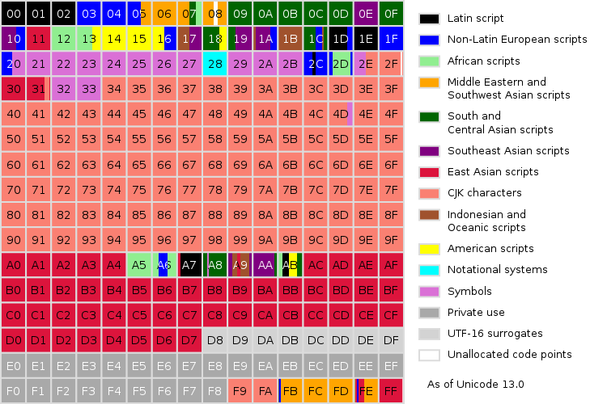
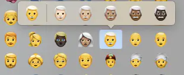
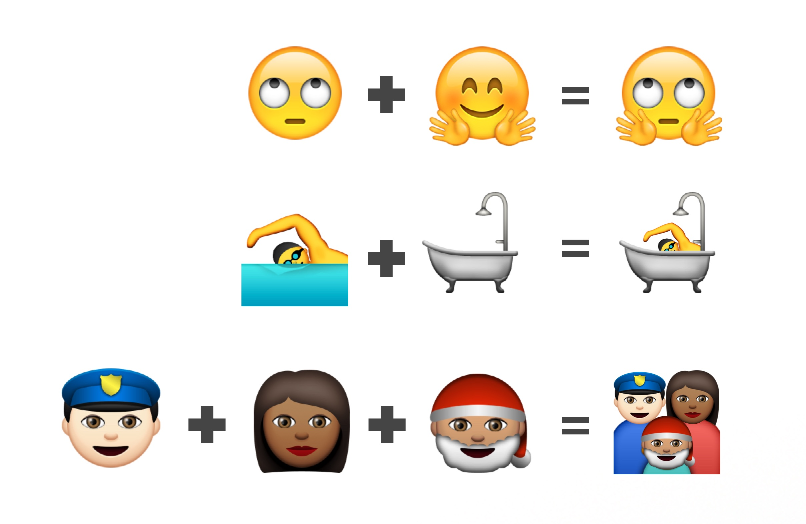

Awesome😎Unicode
2021.07
内容
- Unicode是什么
- Unicode存储及编码
- Emoji&Unicode
- Unicode in JS
- Q&A
“Everyone in the world should be able to use their own language on phones and computers.”
Unicode版本
| 版本 | 发布时间 | 字符数量 |
|---|---|---|
| 1.0 | 1991.10 | 7,161 |
| ... | ||
| 13.0 | 2020.03 | 143,924 |
| 14.0 | 2021.09 | 143,924+? |
Unicode(UTF-8/16/32) ASCII GB-2312 GBK
U+0041
A
LATIN CAPITAL LETTER A
U+00A9
©
COPYRIGHT SIGN
U+1F4A9
💩
PILE OF POO
U+0000 ~ U+10FFFF
1,114,112 = 143,924(已使用) + 970,188(未使用)
1,114,112 = 216×17
17个平面 = 基本多文种平面(BMP) + 16×辅助平面(星光平面)
Basic Multilingual Plane, BMP(基本多文种平面)
码点范围：U+0000 - U+FFFF

Unicode基本多文种平面的示意图。每个写着数字的格子代表256个码点
- Supplementary Multilingual Plane，SMP(多文种补充平面)，码点范围：U+10000 - U+1FFFF
- Supplementary Ideographic Plane，SIP(表意文字补充平面)，码点范围：U+20000 - U+2FFFF
- Tertiary Ideographic Plane，TIP(表意文字第三平面)，码点范围：U+30000 - U+3FFFF
- Plane 4 - Plane 13尚未使用，码点范围：U+40000 - U+DFFFF
- Supplementary Special Purpose Plane，SSP(特别用途补充平面)，码点范围：U+E0000 - U+EFFFF
- Private Use Area，PUA(私人使用区)，码点范围：U+F0000 - U+10FFFF
Unicode与编码
Emoji😎
2010年10月，Unicode6.0版收录了首批582个emoji表情符号
使用频率最高的emoji？😂
Emoji目前主要存储在BMP和SMP
码点范围在U+0000 - U+1FFFF
Emoji Skin Tone Modifier
| 基础emoji | 默认 | 浅肤色 | 较浅肤色 | 中等肤色 | 较深肤色 | 深肤色 |
|---|---|---|---|---|---|---|
| 修饰符码点 | - | U+1F3FB | U+1F3FC | U+1F3FD | U+1F3FE | U+1F3FF |
| U+1F466: 男孩 | 👦 | 👦🏻 | 👦🏼 | 👦🏽 | 👦🏾 | 👦🏿 |
| U+1F467: 女孩 | 👧 | 👧🏻 | 👧🏼 | 👧🏽 | 👧🏾 | 👧🏿 |
| U+1F468: 男人 | 👨 | 👨🏻 | 👨🏼 | 👨🏽 | 👨🏾 | 👨🏿 |
| U+1F469: 女人 | 👩 | 👩🏻 | 👩🏼 | 👩🏽 | 👩🏾 | 👩🏿 |
支持对 手势类(✋✊)、运动类(🏄🏊️)、职业类(👩🚀🦸)emoji 的修饰

Emoji ZWJ Sequence
🤷 + ♀ = 🤷♀️
👩🏻 + 🦰 = 👩🏼🦰
👩 + 🍳 = 👩🍳
👨 + 👩 + 👧 = 👨👩👦
👨 + 👩 + 👧 + 👦 + 👦 = ?
❌
👨👩👧👦👦

Emoji Variation Sequence
| Character | Base | Text | Emoji | Image |
|---|---|---|---|---|
| variation selector | - | U+FE0E |
U+FE0F |
-︎ |
U+2764 |
❤ | ❤︎ | ❤️ | |
U+21A9 |
↩ | ↩︎ | ↩️ | |
U+25B6 |
▶ | ▶︎ | ▶️ |
'𠮷'.length = ？
'🇨🇳'.length = ？
'👩🏽💻'.length = ？
'👨👩👧👦'.length = ？
'𠮷'.length = 2
'🇨🇳'.length = 4
'👩🏽💻'.length = 7
'👨👩👧👦'.length = 11
Unicode in JS
UCS-2和UTF-16
代理对
字符串长度计算问题
解决方案
冷知识
- Unicode中超过一半的字符都是中日韩文字，详情见Unicode字符平面映射
- 日历的Emoji-📅在大部分厂商的环境中(安卓、iOS等)显示的日期都是7月17日，只有少部分厂商个性定制了这个日期，详情见Emojipedia
- Emoji使用频率排行，排名前十的是：😂❤️😍🤣😊🙏💕😭😘👍，详情见Emoji Frequency
- Emoji符号可以用于域名，截至2018年，以.ws作为顶级域的emoji域名已超过25000个， Emoji域名注册见：https://i❤.ws， 维基百科：emoji域名